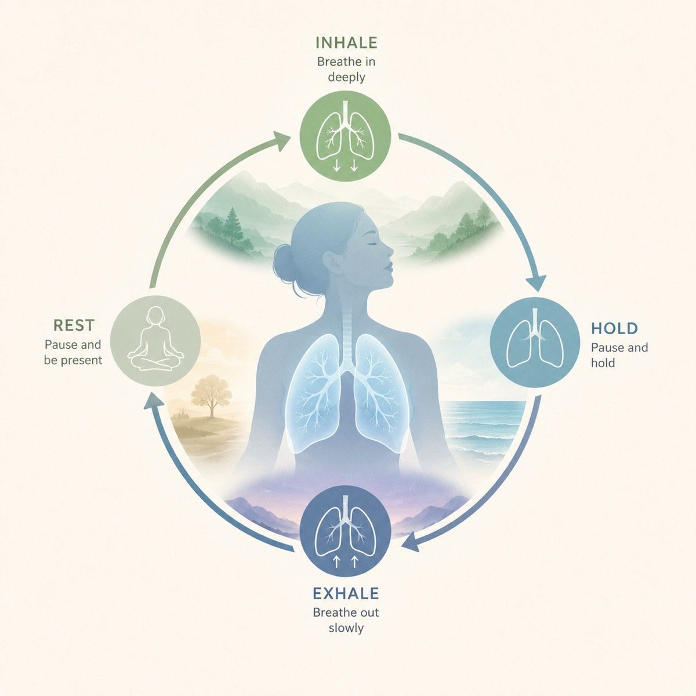
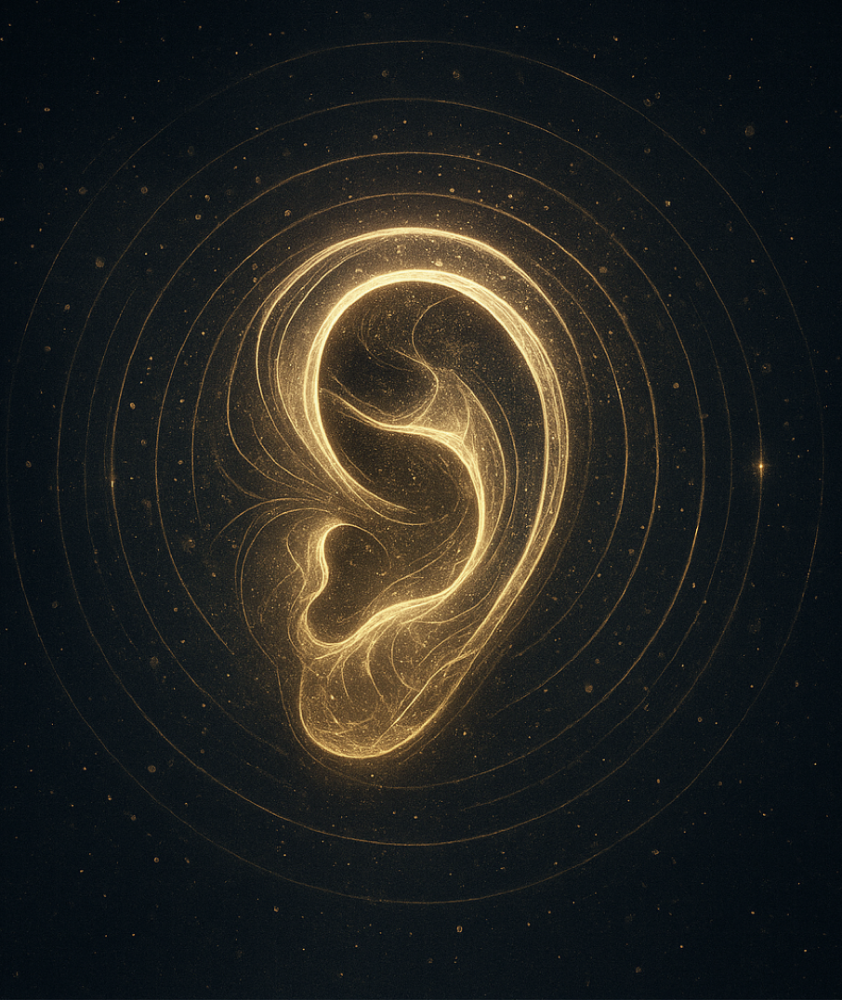
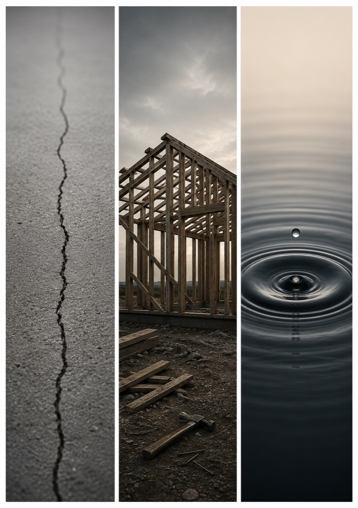

ReSonance Lab
A laboratory for human experience.
ReSonance Lab gathers three chapters of the same search: breath, body and thought. What happens when the human being comes into resonance with itself?
Projects as rooms.
These are not separate projects pretending to belong together. They are different entrances into one investigation: music guiding breath, sound guiding the body, and questions guiding thought.

01 - breathBreathing Cycles
Music guiding breath. A decade-long exploration of how sound can gently lead the body back toward its own rhythm.
Music guiding breath
02 - bodyReHuman
Sound guiding the body. A physical resonance installation where vibration, breath and listening become an embodied experience.
Sound guiding body
03 - thoughtReMind
Questions guiding thought. A digital book and reflection universe where children's questions are examined by a Council of perspectives.
Questions guiding thought 04 - maker
04 - maker
Øyvind
The maker behind ReSonance Lab: composer, sound designer and project creator working where listening becomes practice, technology and shared reflection.
AboutThe maker
Øyvind follows what appears when sound meets something else.
Through film, music, technology, breath, body and reflective worldbuilding, the work keeps returning to one field: the meeting point between the measurable and the experienced.
The projects are different rooms in the same laboratory. Breathing Cycles begins with breath. ReHuman moves into the body. ReMind opens the question of how thought can be guided without being controlled.
The fuller introduction belongs on the about page.
Resonance is not only what sound does in a room. It is also what attention does between people.